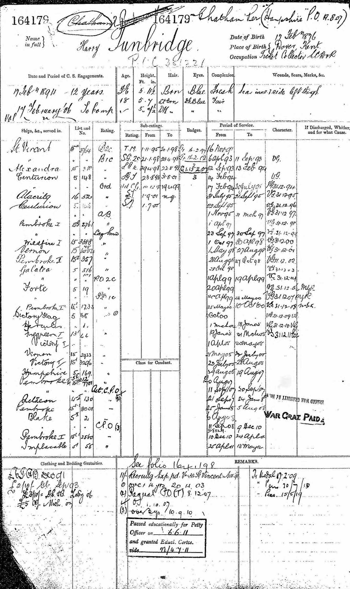
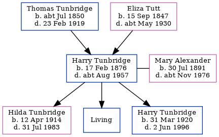

Harry Tunbridge 1876 - c1957
[ Home ] | [ Calendar ] | [ Surnames Index ] | [ Errors ] | [ Family History ]A ticket collector and the eldest of 5 children of Thomas Tunbridge (a dairyman) and Eliza Tutt (a general servant), Harry Tunbridge, the first cousin twice-removed on the father's side of Nigel Horne, was born in Hougham, Kent, England on 17 Feb 18761,2,3,4,5,6,7,8,9 and married Mary Alexander (with whom he had 3 children: Hilda, Thomas and Harry, along with 1 surviving child) at The Albert Hotel, Kirkwall, Orkney Islands, Scotland on 21 Dec 191010.
During his life, he was living at his birthplace in 18811 and on 5 Apr 189111; at Newcome Road, Portsmouth, Hampshire, England on 31 Mar 190113; at Milburn Road, Gillingham, Kent, England on 2 Apr 191112; at Church Road, Dover, Kent on 19 Jun 19215; and at 31 Church Road, Dover, Kent on 29 Sept 19396. He served in the navy from 16 Nov 1893 to 13 May 1912 (Royal Navy - service number 164179) He served in the navy from 16 Nov 1893 to 13 May 1912 (Royal Navy - service number 164179)In 1921 he was working at S E & C R (Out Of Work).
He died c. Aug 1957 in Dover, Kent, England8.
Parents
- Thomas was born c. Jul 1850
- Eliza was born on 15 Sept 1847
Children
- Hilda was born on 12 Apr 1914
- Harry was born on 31 Mar 1920
Citations
- 1881 England Census Online publication - Provo, UT, USA: The Generations Network, Inc., 2004. 1881 British Isles Census Index provided by The Church of Jesus Christ of Latter-day Saints © Copyright 1999 Intellectual Reserve, Inc. All rights reserved. All use is subject to the (Relation to Head of House: Son)
- 1891 England Census Online publication - Provo, UT, USA: The Generations Network, Inc., 2005.Original data - Census Returns of England and Wales, 1891. Kew, Surrey, England: The National Archives of the UK (TNA): Public Record Office (PRO), 1891. Data imaged from The National
- 1901 England Census Online publication - Provo, UT, USA: The Generations Network, Inc., 2005.Original data - Census Returns of England and Wales, 1901. Kew, Surrey, England: The National Archives of the UK (TNA): Public Record Office (PRO), 1901. Data imaged from the National
- 1911 England Census Online publication - Provo, UT, USA: Ancestry.com Operations, Inc., 2011.Original data - Census Returns of England and Wales, 1911. Kew, Surrey, England: The National Archives of the UK (TNA), 1911. Data imaged from the National Archives, London, England.
- 1921 Census Of England & Wales - Findmypast (was age 45 and the head of the household)
- 1939 Register - Findmypast (was recorded at this address)
- England & Wales births 1837-2006 - Findmypast
- England & Wales deaths 1837-2007 - Findmypast
- England & Wales, FreeBMD Birth Index, 1837-1915 Online publication - Provo, UT, USA: The Generations Network, Inc., 2006.Original data - General Register Office. England and Wales Civil Registration Indexes. London, England: General Register Office. © Crown copyright. Published by permission of the Cont
- 1911 England Census Online publication - Provo, UT, USA: Ancestry.com Operations, Inc., 2011.Original data - Census Returns of England and Wales, 1911. Kew, Surrey, England: The National Archives of the UK (TNA), 1911. Data imaged from the National Archives, London, England.
- 1891 England, Wales & Scotland Census - Findmypast (was age 15 and the son of the head of the household)
- 1911 Census for England & Wales - Findmypast (was age 35 and the head of the household)
- 1901 England, Wales & Scotland Census - Findmypast (was age 26 and a boarder in the household)
Media
Harry Tunbridge - Naval Record

England & Wales births 1837-2006 - BMD/B/1876/1/AZ/000593/092
England & Wales deaths 1837-2007 - BMD/D/1957/3/AZ/000946/021
1911 Census for England & Wales - GBC/1911/RG14/03936/0483/1
1901 England, Wales & Scotland Census - GBC/1901/0008636754
Family Tree
Map
Generated by ged2site. Last updated on Jul 3, 2024
Known Issues
May have been living with mother on 1881, but the addresses don't match or aren't detailed enough to be sure
May have been living with father on 1881, but the addresses don't match or aren't detailed enough to be sure
May have been living with mother on 5 Apr 1891, but the addresses don't match or aren't detailed enough to be sure
May have been living with father on 5 Apr 1891, but the addresses don't match or aren't detailed enough to be sure
Location for "employment" on 1921 is empty
Location for the event between 16 Nov 1893 and 13 May 1912 is empty